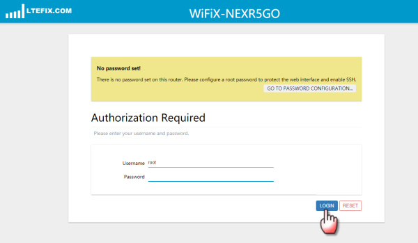
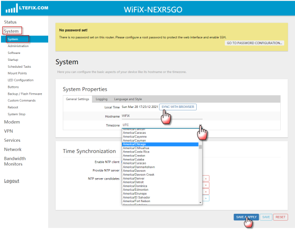
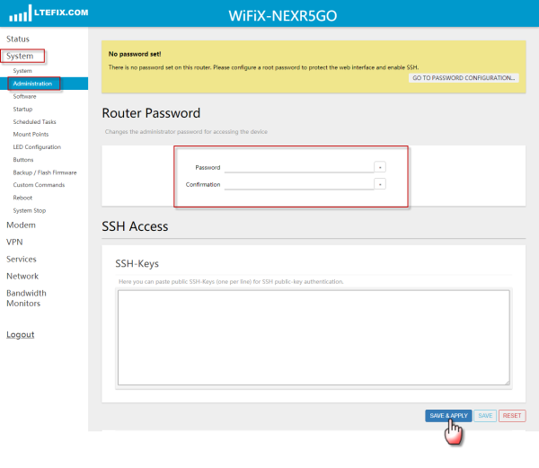
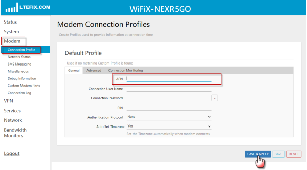

© LTE FIX® LLC, WiFiX™
Your wireless connection for speed!
Visit the store of LTE FIX for the latest in 4G LTE Routers, Modems, Antennas and more...
Router Tips
|
* Allow a few minutes for a router to bootup and configure itself before attempting to login. * Avoid using WiFi to setup the router since you cannot make changes to the WiFi while using it. More important, NEVER update the router's firmare over WiFi--use an ethernet cable. * Always remember to "Save & Apply" after any change to the WiFiX firmware settings. * When changing the APN a hard reboot (Power OFF > Wait 5 Seconds > Power ON) is required. * When Updating the WiFiX firmware, be certain the "Save Settings" box is Unchecked * Clear the web browser's cache (Ctrl & F5) for issues when logging into the router login screen |
|---|
SIM Card Tips
|
* Do not install the SIM Card until the router is complelely set up and ready to connect. * SIM Card related issues is the number one cause for connection problems. * When using a SIM Card Adapter, all tabs/tits "must" be removed from all four sides of the SIM card using a piece of sandpaper or Emery board. The SIM card must fit flat and freely into the adapter--not loose but not tight. * Examine the SIM Card closely for any sign of damage. Clean dirty SIM Card electronic chip with a pencil eraser and an alcohol pad. Refrain from touching the metal chip area during installation. * |
|---|
Router Login
| Login Credentials | |
|---|---|
| User | root |
| Password | no password is set by default |
|
* Left click the LOGIN button to log into the router's UI
 Log into router the WiFiX Router now | |
Set the Time Zone
|
* Once logged into the router, set the Local Time and Time Zone from the menu. | |
|---|---|
| Menu Tab Location | SYSTEM > SYSTEM > GENERAL SETTINGS |
|
* Click on SYNC WITH BROWSER. * Select the proper Time Zone from the drop down list. then SAVE & APPLY (which must ALWAYS be done for ANY change to a firmware configuration to take effect). * SAVE & APPLY (which must ALWAYS be done for ANY change to a firmware configuration in order to take effect). | |
|
 Proceed to the router's Time Zone settings | |
Change the Login Password
|
* Change the password that is required to login to the router's Login Console. | |
|---|---|
| Menu Tab Location | SYSTEM > ADMINISTRATION > ROUTER PASSWORD |
|
* Make a written note of your password so not to forget. * SAVE & APPLY (which must ALWAYS be done for ANY change to a firmware configuration in order to take effect). | |
|
 Proceed to the router's Password settings | |
| Handy Tip: | Pressing and holding in the reset button for 12 to 15 seconds will reset the password it its default setting. |
Set the APN
|
* Set the "correct" APN that is used by the carrier and the plan being used. Some of the more common APN's are listing below. | |
|---|---|
| Menu Tab Location | MODEM > CONNECTION PROFILE > APN |
|
* Make certain the APN is spelled correctly. There should be no blank spaces before or after the APN. * The correct APN must be used. If you are not sure the APN contact your carrier or use google. * SAVE & APPLY (which must ALWAYS be done for ANY change to a firmware configuration in order to take effect). | |
|
 Proceed to the router's APN settings | |
| Handy Tip: | Setting and/or changing an APN requires a "Power Off > Power On" router reboot to take effect. |
| Carrier | APN (Primary) | APN (Other) |
|---|---|---|
| AT&T | broadband | nxtgenphone |
| Cricket | ndo | |
| MetroPCS | fast.metropcs.com | |
| Mint | wholesale | |
| Sprint | r.ispsn | n.ispsn |
| StraightTalk - Net10 | tfdata | |
| MetroPCS | fast.metropcs.com | |
| T-Mobile | fast.t-mobile.com | fbb.home |
| TotalWireless - Tracfone | reseller | |
| US Cellular | internet | |
| Verizon | vzwinternet | |
| Visible | vsblinternet |
|
After completing the steps above, Power OFF the router > Insert the SIM Card > Power ON the router. A connection should be established after a few minutes. These are the basic settings for a connection. Instructions covering additional settings (i.e., WiFi, Updating Firmware, Firmware Recovery Console....) may be accessed below. |
|---|